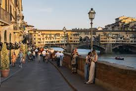
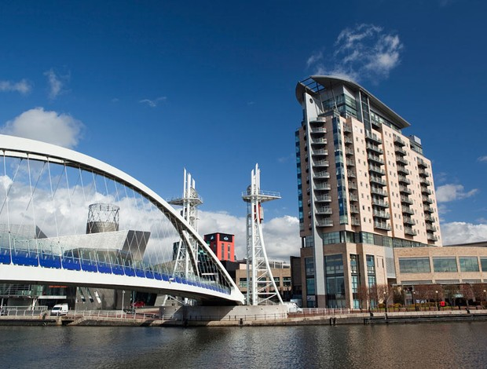

EuroTour é um site que ajuda vocÊ a planejar sua viagem para a Europa, desde a compra das passagens, até a visita aos pontos turísticos mais importantes de cada região
Florença (em italiano: Firenze) é um município italiano, sub-capital e maior cidade da região da Toscana e da província homônima, com cerca de 377 207 habitantes (1 007 252 a cidade metropolitana).
Manchester é uma cidade do Reino Unido, no noroeste da Inglaterra. A aglomeração urbana de Manchester tem cerca de 3,6 milhões de habitantes, a segunda cidade mais populosa da Inglaterra, que inclui outras cidades e áreas no condado, e é chamada Grande Manchester

Florença (em italiano: Firenze) é um município italiano, sub-capital e maior cidade da região da Toscana e da província homônima, com cerca de 377 207 habitantes (1 007 252 a cidade metropolitana).